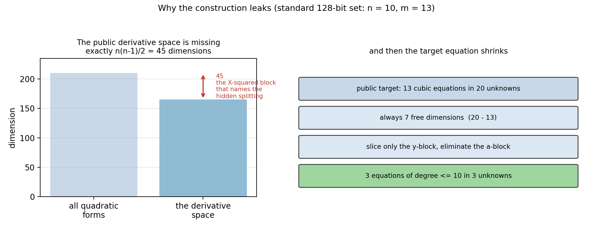

Facto-DSA (sign-10): a signature from the public key alone
At the standard 128-bit parameters (q = 65519,
n = 10, m = 13) the public key determines an
equivalent internal description of the submitted scheme, and that
description yields a 40-byte signature that the submitters' own
sig_verify accepts. No secret key and no signing oracle is
used anywhere.
Interactive walkthrough of one real run →
Six steps over the vendored KAT key and a signature the attack produced:
the dimension defect, the recovered split, the triangular flag, the
collapse of the target equation, and the term-by-term check of
P(z) = h.
Why the construction leaks →
Left: the public derivative space is 45 dimensions short and the missing block names the hidden variable split. Right: the same fact reduces the target equation to three unknowns.

Read the repository →
Attack chain, complexity, acceptance against the submitters' verifier, and the limitations of the result - plus the recorded runs the numbers on this page come from.
Reproduce it
git clone https://github.com/MingLLuo/facto_dsa_ngcc_round1
cd facto_dsa_ngcc_round1
python3 scripts/check_environment.py # prints READY
python3 scripts/run_standard_128.py # forged, ~14 s
python3 scripts/run_acceptance.py --source kat # the authors' sig_verify returns 0
python3 scripts/forge_server.py # forge signatures for your own messagesThe forger runs locally: it needs a Python process, FLINT and
msolve, so it is not part of this static page. This page and
the walkthrough are self-contained HTML with no external assets.